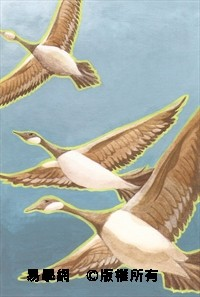
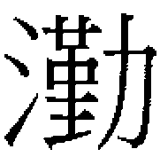
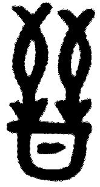

䷴ 漸卦 風山漸
漸，女歸吉，利貞。初六，鴻漸于干，小子厲，有言，无咎。六二，鴻漸于磐，飲食衎衎，吉。九三，鴻漸于陸，夫征不復，婦孕不育，凶，利禦寇。六四，鴻漸于木，或得其桷，无咎。九五，鴻漸于陵，婦三歲不孕，終莫之勝，吉。上九，鴻漸于陸，其羽可用為儀，吉。
| 
彖曰：漸之進也，女歸吉也。（圖：小配） |
【卦名】
今本：漸 歸藏：漸 帛書：漸 秦簡：漸 清華簡： 上博簡： 海昏簡：漸
《說文》：「漸水，出丹陽黟南蠻中，東入海。从水斬聲。」段注：「走部有𧽯字，訓進也。今則皆用漸字，而𧽯廢矣。」《說文》走部：「𧽯，進也，从走斬聲。」段注：「按：水部漸云：漸，水也。則訓進者當專作𧽯，許所見《周易》卦名當如是矣。」
依《說文》，「漸」原本是河流的名稱。段玉裁注考證甚詳，漸江即漸江水，大致上是現今錢塘江的源頭，古或稱浙江。但《周易》傳統皆解釋「漸」為「進」，該字義源自於「𧽯」字。「漸」行之後「𧽯」字廢而不用。段玉裁甚至認為，許慎當初所見的《周易》卦名很可能就是𧽯。
至於現今我們講「逐漸」、「漸漸」，字義可能來自𧽯進的引申，也可能是源自「蔪」字。《說文》：「蔪，艸相蔪苞也。从艸斬聲。《書》曰：艸木蔪苞。」《說文》所引《尚書》今作「草木漸包」，段玉裁注引《釋文》：「漸本又作蔪。」蔪音堅，原義為草相互包裹而叢生狀，後來引申為緩慢前進、改變，逐漸的意思，並以漸為假借。
上博簡作 ，應是漸的異體字，或是字形的訛變。濮茅左釋讀為漸字，同簡的六二與九三爻辭又作「漸」字，可為證。
清華簡作 ， 是由𨟻繁化而來，𨟻即醬的古文，戰國竹簡中𨟻亦假借為將，所以或可釋讀為蔣。但清華簡整理者將釋讀為漸。
【卦義】
《周易》中「漸」取「進」的意思，如《序卦》：「物不可以終止，故受之以漸，漸者進也。」
但晉卦也是進，如《序卦》：「晉者進也。」《彖傳》：「晉，進也。」
兩者如何區別？
晉字《說文》作㬜：「㬜，進也，日出萬物進。從日從臸。《易》曰：明出地上，㬜。」晉字甲骨文為兩隻箭倒插入筒，取疾速進入之義。對比之下，漸卦的進，則是循序漸進、緩進，就如漸卦的卦象「止而進」，邊停邊走的前進。兩者緩疾有所不同。
王弼：「漸者，漸進之卦也。止而巽，以斯適進，漸進者也。」孔穎達：「漸者不速之名也。凡物有變移，徐而不速，謂之漸也。」朱熹：「漸，漸進也。為卦止於下而巽於上，為不遽進之義，有女歸之象焉。」此皆取漸進、緩進之義，孔穎達所說的「不速之名」。
《彖傳》說：「漸之進也，女歸吉也。進得位，往有功也。進以正，可以正邦也。其位剛得中也。止而巽，動不窮也。」漸的循序漸進，不但女子嫁人吉，君子進也可以得位，前往會有功業，循序漸進以守正可以守國家。停止然後再漸進（止而巽），則前進的力量可以源源不絕。
卦辭以女歸為義，而爻辭講的則是以鴻鳥如何漸進為主軸，另也談到婦人之孕育子女。
鴻是大型水鳥，有人說是雁，或是大型的雁。《說文》則以鵠與鴻互解，鵠即天鵝。但就卦義來看，鴻應是指雁。雁的飛行，井然有序，循序漸進，並不會直接到達下一個目的，而是先找近處的地方停靠，逐步到達。鴻也象徵君子行為有儀有序。
漸卦卦象為內艮止，外巽入，止而漸入。巽亦有齊義，《說卦》：「齊乎巽。」山上有木，樹木生長於山上，蔪苞之象。漸卦又有少男與長女婚合之象，少男下於長女，男女剛柔得位，柔又能承剛，因此卦辭說「女歸吉」，女子嫁人為吉。《雜卦傳》：「漸，女歸待男行也。」《序卦》又說：「物不可以終止，故受之以漸，漸者進也。進必有所歸，故受之以歸妹。」漸是繼艮卦而來，艮為止，止而後漸進。而其下一卦就是歸妹，嫁妹之義。
得漸卦不止嫁取可成，延伸到其他事情，凡事緩步慢行，循序漸進，也是自然可行。但反之，如果焦躁而貿然前進，反而無法成功。諸事不宜冒險，宜於守住既有領域，離開自己原有領域則大凶。就如大雁，一旦離開熟悉的水域，就很可能遭到獵殺而一去不返。
從爻辭來看，漸卦典故可能與周公東居有關。據說《詩．九罭》講的是周公東居之事，旨在讚美周公，諷刺朝廷的不知。該詩內容與漸卦爻辭近似，唯《周易》「鴻漸」該詩作「鴻飛」：
九罭之魚，鱒魴。我覯之子，袞衣繡裳。
鴻飛遵渚，公歸無所，於女信處。
鴻飛遵陸，公歸不復，於女信宿。
是以有袞衣兮，無以我公歸兮，無使我心悲兮。
首句說：「九罭之魚鱒魴，我覯之子，袞衣繡裳。」「九罭」原是小目的魚網，是要捕小魚的，沒想到卻捕到「鱒魴」這種大而美的魚；在東土這個小地方，卻捕到如此尊貴的野生周公。
至於「鴻飛」，解讀上有兩個重點。一是《詩經》中凡見鳥「飛」的筆法，都是喻指有人要遠行或離去。二是要注意是什麼鳥在飛，因為人的情感、期望，會寄託在飛鳥之上。
鴻是一種大雁，也是一種候鳥，飛去之後會再回來，所以有期望人能夠再回來的涵義。另一重要涵義則是鴻雁的飛行很有秩序，象徵人的行為符合儀節禮法，並以此引申至婚義，如李光地：「昏禮用雁，大夫執贄亦用雁，皆取有別有序之義。」李鼎祚：「鴻，隨陽鳥，喻女從夫。卦明漸義，爻皆稱焉。」
所以「鴻飛」兩字一方面寄託了士大夫期望周公來歸之情，或者東都之人期望周公應成王之召回去之後，希望他可以再回來，不要只是來暫住幾晚；另一方面也在喻指周公並無篡位等不符禮法之事。
「公歸無所，於女信處」；「公歸不復，於女信宿」，可能即卦辭的「女歸」，「汝歸」之義也。
漸，女歸吉，利貞。
- 《彖》曰：漸之進也，女歸吉也。進得位，往有功也。進以正，可以正邦也。其位剛得中也。止而巽，動不窮也。
- 《象》曰：山上有木，漸，君子以居賢德善俗。
- 《序卦》：物不可以終止，故受之以漸，漸者進也。
- 《雜卦》：漸，女歸待男行也。
- 海昏《易占》：漸者進也。
漸進，女子嫁人吉，利於貞定。
女子嫁人為歸，因為嫁人為女子的歸宿。漸進不只適於嫁女，也有利於君子的進升。《彖》曰：「漸之進也，女歸吉也。進得位，往有功也，進以正，可以正邦也。其位剛得中也。止而巽，動不窮也。」九五君爻剛得位而得中。停止然後再漸進，前進的力量可以源源不絕。循序漸進則諸事大吉。
蔡清註歸妹卦：「不曰妹歸而曰歸妹，歸者在妹也，如漸則曰女歸矣。」《周易》有「歸妹」卦，為何不言「妹歸」？而漸卦曰「女歸」，為何不曰「歸女」？言「歸妹」、「歸女」似乎有女方主動的意謂，而漸卦言「女歸」則是女方被動，等待男方來娶，因此嫁娶合禮而有序。古代婚合，以男方主動為宜。
《周易》言嫁娶者，如咸卦「取女吉」，是從男方而言娶女。「女歸」與「歸妹」則是從女方立場談嫁女。蒙卦九二「納婦」，此如《左傳》成公二年「莊王欲納夏姬」，夏姬已為人婦，莊王再納之。漸卦九三婦孕不育，九五婦三歲不孕，則又以女子嫁人之後而為人婦而言。
【字義】
女歸：通解為女子嫁人。女，甲金文中有多義，除女子外，亦可作「汝」，表示第二人稱。可參考香港中文大學漢語多功能字庫。《說文》：「歸，女嫁也。」然而，甲骨卜辭中歸多用作歸來、歸返之義。依其基本字義，女歸亦可解釋為「汝歸」，你要歸去、歸來。但女在甲骨卜辭中又有作「毋」用者，女歸即「毋歸」，不歸為吉。然而，周朝用語中，女用作汝較為普遍，因此女歸解釋為「汝歸」為宜。《詩經．九罭》：「鴻飛遵渚，公歸無所，於女信處。鴻飛遵陸，公歸不復，於女信宿。」
居賢德善俗：依王肅，當作「居賢德，善風俗」。朱熹：「疑賢字衍，或善下有脫字。」依朱子，當作「居德善俗」，或採用王肅說，作「居賢德，善風俗」。
初六，鴻漸于干。小子厲，有言，无咎。
《象》曰：小子之厲，義无咎也。
大雁逐漸飛到水岸邊，年青的小子有危險，身受流言蜚語，沒有罪咎。
「小子厲有言」依王弼註，大致解釋為君子受小人饞言之害：
- 王弼：困於小子讒諛之言，未傷君子之義，故曰无咎也。
- 孔穎達：始進未得顯位，易致陵辱，則是危於小子，而被毀於謗言，故曰小子厲有言。小人之言，未傷君子之義，故曰无咎。
依《豳風．九罭》，此或為周公東居之事。「小子厲有言无咎」可能意指周公受到流言蜚語，最終能還其清白，沒有罪咎。
小子，年青小子，周貴族自我謙稱亦稱小子，此疑周公自占時之自稱。《尚書．金滕》，武王病，周公為其問卜，並自占兆體：「王其罔害，予小子新命于三王，惟永終是圖。」意指武王將平安無害，而周公重新得到三王（太王、季歷、文王）的授命。「予小子」即周公自稱。
干，一語多關。干通岸，鴻漸於岸即鴻鳥飛到河岸。干又是扞的初文，則有扞衛之義。
【字義】
鴻：虞翻：「鴻，大雁也。」《說文》：「鴻，鴻鵠也，从鳥江聲。」鵠即天鵝，鴻為近於天鵝的大雁。段玉裁注：「黃鵠一名鴻。《豳風》『鴻飛遵渚』，毛曰：『鴻不宜循渚。』『鴻飛遵陸』毛曰：『陸非鴻所宜止。』按：鄭箋衹云：『鴻，大鳥。』不言何鳥。學者多云雁之大者。夫鴻雁遵渚遵陸，亦其常耳，何以毛云不宜？以喻周公未得禮。正謂一舉千里之大鳥，常集高山茂林之上，不當循小州之渚、高平之陸也。經傳鴻字有謂大雁者，如《曲禮》『前有車騎則載飛鴻』、《易》『鴻漸于磐』是也。有謂黃鵠者，此《詩》是也。」鴻帛書作「䲨」，較今文缺水字邊。䲨《說文》作𨾊：「𨾊，鳥肥大，𨾊𨾊也，从隹工聲。䲨，𨾊或從鳥。」
干：《周易》通解，音義同岸，河岸、水岸，水邊。鄭玄：「干謂大水之傍，故停水處。」陸績：「水畔稱干。」翟元：「干，涯也。」孔穎達：「干，水涯也。」干又可解釋作澗，荀爽王肅：「干，山間澗水也。 」虞翻：「小水從山流下稱干。」但依《說文》：「干，犯也。」甲骨文干用作捍衛之義，可能是扞的初文。《尚書．牧誓》：「稱爾戈，比爾干，立爾矛。」干又用作兵器。《大禹謨》：「舞干羽于兩階。」《周禮》：「司干掌舞器。」鄭玄：「干，舞者所持，謂楯也。」干亦可作欄干義。帛書作淵，淵為深水。
小子：年青人。周時貴族常以小子自稱，或以小子稱呼自己的兄弟小輩。《尚書》中經常可見。隨卦六二「係小子，失丈夫」，六三「係丈夫，失小子」，小子皆與丈夫對文，又別為一義。
厲：危險。
有言：閒言閒語，饞言。
六二，鴻漸于磐，飲食衎衎，吉。
《象》曰：飲食衎衎，不素飽也。
大雁飛到了大石頭上，很快樂地在上面享受美食，吉。
磐為大石頭，象徵穩定、安穩。鴻鳥在石頭上之所以能夠很快樂地飲食，是因為感覺到安全與穩當。《象》曰：「飲食衎衎，不素飽也。」之所以飲食快樂自得，不是單純的飽腹而已，當中還有安全、得志。
【字義】
磐：朱熹解釋為「大石」，程頤則說是水邊平穩的石頭：「磐，石之安平者，江河之濱所有。」宋代以前各家注解，雖不盡相同，但共同點是指向「山石」。如王弼：「磐，山石之安者也。」磐石為安穩的山石。虞翻認為是叢聚的山石：「艮為山石。坎為聚，聚石稱磐。」馬融：「山中石磐紆，故稱磐也。」由於山石經常是盤旋紆迴，因此稱磐石。依程朱，那麼鴻鳥是仍在江邊，所以才能怡然自得地飲食。若磐石為山石，那麼鴻鳥已經飛離水邊，而到了山邊或山上。關於這個注解的岐異，孔穎達說：「馬季長云：『山中石磐紆，故稱磐也。』鴻是水鳥，非是集於山石陵陸之禽，而爻辭以此言鴻漸者，蓋漸之為義，漸漸之於高，故取山石陵陸，以應漸高之義，不復係水鳥也。」
衎：音看，走路一副很快樂的樣子。衎衎，快樂而自得的樣子。《說文》：「行喜皃，从行干聲。」王弼：「衎衎，樂也。」朱熹：「衎衎，和樂意。」衎又解釋為寬裕富饒狀，馬融：「 衎衎，饒衎也。」王肅：「衎衎，寬饒之貌。」
不素飽：素原意為白布，引申為樸素，或引申為空。不素飽，不空飽，並不是空得飽食而已。虞翻：「素，空也。」程頤：「不謂空飽飲食而已。素，空也。」朱熹：「素飽，如《詩》言素餐，得之以道，是不為徒飽而處之安矣。」朱子所指，為《詩經．伐檀》：「彼君子兮，不素餐兮。」不素餐意謂不空享其食祿而無所是事。孔穎達解釋為故：「素，故也，故无祿養，今日得之，故願莫先焉。」依孔穎達，不素飽不故飽，意謂以往所沒有，而現在得到了。
九三，鴻漸于陸，夫征不復。婦孕不育，凶。利禦寇。
《象》曰：夫征不復，離群醜也；婦孕不育，失其道也；利用禦寇，順相保也。
大雁飛到陸地，丈夫出征一去無回。婦人懷孕而無法生養兒女，凶。宜於抵禦賊寇。
此言丈夫因為出征而陣亡，在家之妻子因此難以獨立生養小孩，因此為凶。然而《象傳》說「夫征不復，離群醜也」，之所以無法回家，是因為離開了同類。「婦孕不育，失其道也」言婦女不守婦道。歷代注解者皆依此而認為丈夫沉迷於女色而不回家，而女人也跟人私奔而不養育小孩。如王弼：「夫征不復，樂於邪配，則婦亦不能執貞矣。非夫而孕，故不育也。」這種解釋過於加油添醋。爻辭應該很單純的在講丈夫出征而戰死，使得家中婦女因此無法獨立養育小孩的悲劇。前面鴻漸於陸為前言與隱喻，比喻水鳥飛到自己所不熟悉的地方，因此將遭獵殺，然後導出夫征不復，戰死不歸的情節。
就卦象來看，九三從六二的山腰坎下，一下飛到山頂坎中，進不循序，因此而凶。
得此爻利於守在原處防禦賊寇之來襲，不宜採取攻勢主動出擊。出擊則有「夫征不復」的凶險。
蒙卦上九：「不利為寇，利禦寇。」
【字義】
陸：高而平的地面，現今說的陸地。《說文》：「高平地。」《爾雅》：「高平曰陸，大陸曰阜，大阜曰陵，大陵曰阿。」馬融：「山上高平曰陸。」王弼：「陸，高之頂也。」虞翻：「高平稱陸。」九三在艮之上，互體坎中，坎為平，高而平之象。
夫征不復：丈夫出征而不能回家。征，遠行，引申為出征、征伐、征戰。復，回家，歸來。程頤：「征，行也。復，反也。」
離群醜：離有多義。1. 離卦《彖》曰：「離，麗也。」離為附麗。2. 離去之義。乾《文言》：「進退无恒，非離群也。」坤《文言》：「猶未離其類也。」 醜，類也，引申為眾。離群醜即附麗於群類，或離開同類。孔穎達：「醜，類也。言三與初二，雖有陰陽之殊，同體艮卦，故謂之群醜也。」《詩經．吉日》：「升彼大阜，從其群醜。」鄭箋：「醜，眾也。田而升大阜，從禽獸之群眾也。」〈泮水〉：「順彼長道，屈此群醜。」此群醜鄭箋註解為「惡」，但毛傳曰：「屈收，醜眾也。」或以醜為醜惡之醜，《說文》：「醜，可惡也。」離群醜，離開群體乃醜惡之行。如程頤：「離判其群類，為可醜也。」
婦孕不育：婦女懷孕而無法生養。孕為懷孕，育為養育、教育，《爾雅．釋詁下》：「育，長也。」《說文》：「育，養子使作善也。」《詩經．蓼莪》：「父兮生我，母兮鞠我。拊我畜我，長我育我。」〈生民〉：「載生載育。」育或解釋為生育，如虞翻：「孕，妊娠也。育，生也。」甲骨文作生育義。
六四，鴻漸于木，或得其桷，无咎。
《象》曰：或得其桷，順以巽也。
大雁飛到了樹上，或許可以找根粗壯的橫木來停歇，沒有罪咎。
鴻鳥腳趾太長而相連，無法棲於一般的樹枝上，只有橫而粗的樹枝（桷）才可以棲息。此比喻在漸進的中途中，應當要能夠權宜而順應環境。
【字義】
桷：音絕，方形的椽木，屋樑兩邊用以鋪上瓦片的木條。水鳥不適於棲息在細樹枝上，只能找平直而粗的才能夠停歇。且樹林亦非水鳥之棲地，休息之處非其所安。因此有入境隨俗之義。象傳則說「順以巽也」。馬融陸績：「桷，榱也。」翟元：「方曰桷，桷，椽也。」虞翻：「巽為木。桷，椽也。方者謂之桷。」孔穎達開始將桷解釋為長得像椽木的樹枝：「桷，榱也。之木而遇堪為桷之枝，取其易直可安也。」至程頤直接解釋為「平柯」，即橫向而長得平直宜於鳥棲的樹枝：「桷，橫平之柯，唯平柯之上，乃能安處。」朱子從程說。前文「鴻漸於木」，因此桷應該是長得像桷的樹枝。
九五，鴻漸于陵，婦三歲不孕，終莫之勝吉。
《象》曰：終莫之勝吉，得所願也。
大雁飛到了丘陵上，婦女三年無法懷孕。但終究能得償所願，最後為吉。
「婦三歲不孕」是因無法見到丈夫，所以無法懷孕。但是三年過後，終究能得償所願，最後為吉。三年是概略之數，意思是幾年以後，並非一定是三年。
【字義】
終莫之勝吉：語意不通，當存疑。《說文》：「勝，任也。」段玉裁：「能克之皆曰勝。」依字義，最終無法勝任而吉。但語義顯然不通。虞翻：「勝，陵也。」取的應該是「欺凌」義，最終無法欺凌而吉。王弼：「三四不能久塞其塗者也。不過三歲，必得所願矣。」程朱取義大致近於王弼義。此喻指阻礙丈夫與妻子相見的人，終於無法再從中攔阻。勝指的是「塞其塗」。這樣的解釋，語義顯然嚴重扭曲。
上九，鴻漸于陸，其羽可用為儀，吉。
《象》曰：其羽可用為儀，吉，不可亂也。
大雁飛到天空雲路上，它的羽毛可用於禮儀，吉。
鴻雁羽毛用於禮儀，有秩序井然不亂的象徵意義。
九三亦云「鴻漸於陸」。漸卦六爻以鴻漸鋪陳，初漸於干，二漸於磐，三漸於陸，四漸於木，五漸於陵。干為岸，仍在水邊；磐為石，陸為高平之地，陵為比陸更高的山陵。《爾雅》：「高平曰陸，大陸曰阜，大阜曰陵，大陵曰阿。」至上為比陵高的更高之地，因此陸可能假借為逵或阿。程朱採用胡瑗註，認為陸當作逵，即天上的雲陸。
《曲禮》：「前有車騎則載飛鴻。」此言會同行軍之禮，前面有車騎時，旌旗上則畫有飛鴻圖案，要眾人能夠有所警誡。鄭玄注：「鴻，取飛有行列也。」孔穎達疏：「鴻，鴻雁也。雁飛有行列，與車騎相似，若軍前忽遙見彼人有多車騎，則畫鴻於旌首而載之，使眾見而為防也。」
【字義】
陸：1. 高平之地，同九三之陸。2.陸借為逵，雲路也。九三也稱「陸」，於此再稱陸似有不通，朱熹因此認為，陸當作逵，雲路也：「胡氏程氏皆云：陸當作逵，謂雲路也。今以韻讀之良是。」此說出自胡瑗，後來程朱亦採用此說。程頤：「安定胡公以陸為逵，逵，雲路也，謂虛空之中。《爾雅》：『九達謂之逵。』逵，通達无阻蔽之義也。」安定胡公即胡瑗，胡瑗《周易口義》：「漸卦自下而漸于上，自微而至於高大。且陵者未為極高之地，豈有反下之義哉？今考于經文，陸字當為逵字。蓋典籍傳文字體，相類而錄之誤也。逵者雲路也。言鴻之飛，高至于雲路。其羽翎毛，質可以為表儀，亦猶賢人君子，自下位而登公輔之列，功業隆盛，崇高遠大，可以為天下之儀表，故獲吉也。」胡瑗認為，王弼亦取雲路之義。王弼：「進處高絜，不累於位，无物可以屈其心而亂其志。峨峨清遠，儀可貴也。」胡瑗：「若止在高平之陸，安得有高潔峩峩清遠之象哉？以此推之，是傳錄之際，誤書此逵為陸字也明矣。」3. 陸借為阿，比陵更高的高地。李光地並不贊同朱子之說，他認為，陸當借為阿：「陸字與九三重，故先儒改作逵字以叶韻。然逵儀古韻，實非叶也。意者陸乃阿字之誤。阿，大陵也，進於陵則阿矣。儀，古讀俄，正與阿叶。《詩》云：『菁菁者莪，在彼中阿，既見君子，樂且有儀。』」
儀：1. 儀表。孔穎達：「高而能不以位自累，則其羽可用為物之儀表。」2. 旌旗上的羽毛裝飾。朱熹：「儀，羽旄，旌纛之飾也。」3. 法度。《說文》：「儀，度也。」依段玉裁注，又引申為宜、誼、善、義。
【彖傳】
《彖》曰：漸之進也，女歸吉也。進得位，往有功也，進以正，可以正邦也。其位剛得中也。止而巽，動不窮也。
漸之進也，女歸吉也：解釋經文女歸吉。漸之前進，女子嫁人則吉。
進得位，往有功也：以卦變解釋漸卦。漸卦為否卦而來，否卦六三至四成漸。六三至四為進，成漸卦六四之後當位而承五，為進得位，五多功。進既得位，往則有功。
進以正，可以正邦也：或指九三。九三為否卦九四而來，至三在否卦坤體之上而當位，互體坎中，坎為正，坤為邦，因此曰正邦。但也可能指的是九五，但九五難以解釋｢進以正｣之象。若與後文合看，則｢其位剛得中也｣，當指九五。
其位剛得中也：九五為治卦之主爻，陽剛而得中。
止而巽，動不窮也：上下二體卦德解釋卦義。漸卦下艮為止，上為巽。若能止而漸進，則可動而不窮。
上九「鴻漸于陸」中的「陸」，有沒有可能會是「陛」字之誤？
一來二字字形相似；二來亦符合上九之位；三來似乎可以和後一句「其羽可用為儀」相通。
未知大家有甚麼看法？
“陛”基本上是個比較後起的字，所以這種可能性不是很大。
“陛”基本上是個比較後起的字，所以這種可能性不是很大。